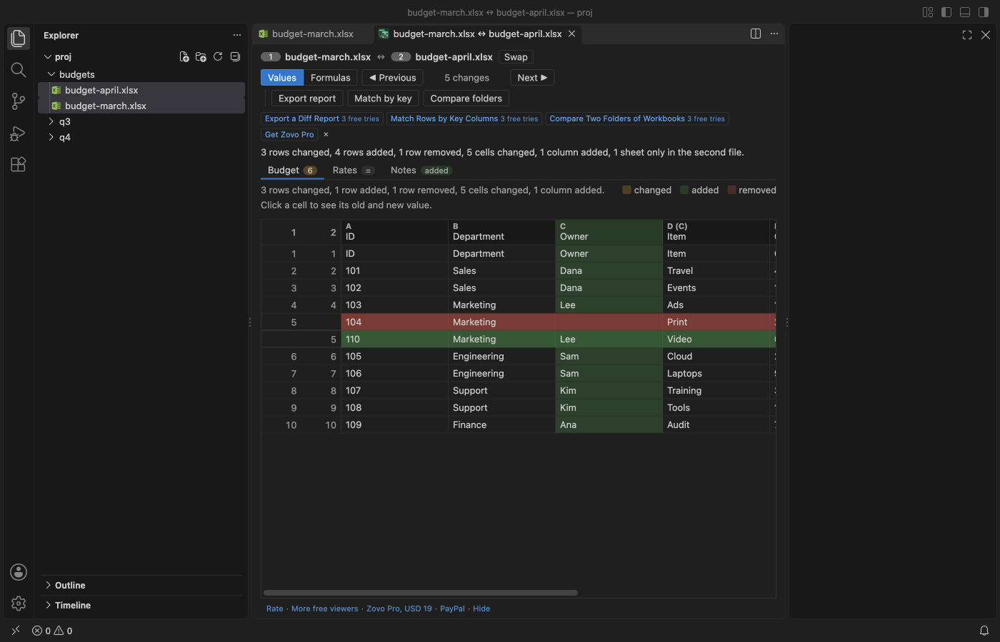
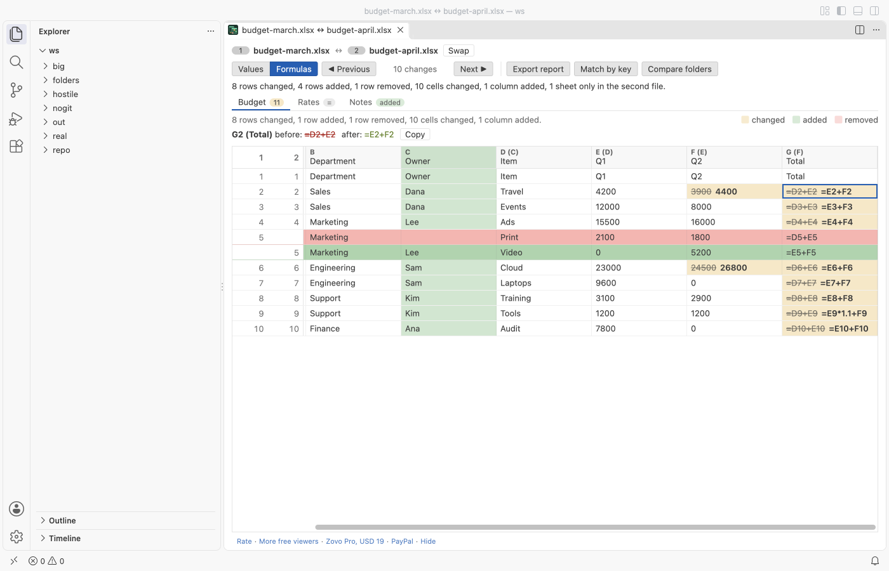
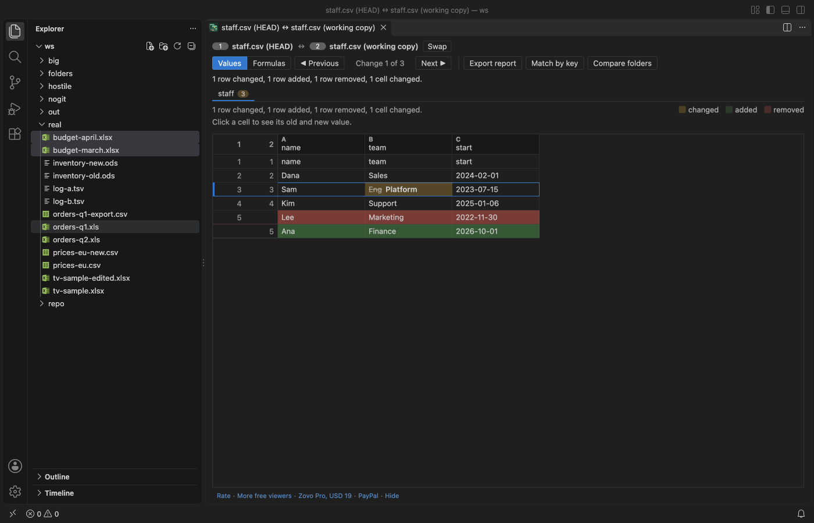

Excel Compare & XLSX Diff
Excel Compare & XLSX Diff, a VS Code extension by Zovo
Excel compare for VS Code: compare two Excel workbooks or CSV files cell by cell and see which rows were added or removed, which cells changed, and which sheets exist in only one file. Compare a workbook with its Git HEAD version before you commit.
Free, MIT license. Needs VS Code 1.90.0 or newer. Extension ID zovo.zovo-excel-compare, version 0.1.1.

Free, with no sign-in and no network:
- Compare .xlsx, .xlsm, .xls, .ods, .csv and .tsv files in any mix, from the Explorer or the command palette.
- Rows are lined up, columns are matched by header, sheets by name, so an inserted row or column shows as one change.
- Next and Previous change across sheets, Values or Formulas, compare with Git HEAD.
- Large files stay fast: the grid draws only the rows on screen, and reading runs in a worker with limits.
Zovo Pro: USD 19 once, for the Pro tools in every Zovo extension. Export a diff report (XLSX, HTML or CSV), Match rows by key columns and Compare two folders of workbooks each have 3 free tries on this computer. A small Pro tools row in the comparison toolbar shows the tries left; its × hides it until VS Code restarts.

Questions people ask
Is Excel Compare & XLSX Diff free?
Yes. Excel Compare & XLSX Diff is free and MIT licensed.
How do I install Excel Compare & XLSX Diff?
Click "Install in VS Code" above, or search for zovo.zovo-excel-compare in the Extensions view.
How to compare
- Select two files in the Explorer, right-click and pick Compare Selected Excel Files.
- Right-click one file, pick Compare with... and choose the other one.
- Right-click a file in a Git repository and pick Compare with Git HEAD.
- Or run Excel Compare: Compare Two Excel or CSV Files... from the command palette.
File types: .xlsx, .xlsm, .xls, .ods, .csv and .tsv, in any mix (an .xlsx against a .csv works).
What you see
- Changed cells in yellow, with the old value struck through next to the new one. Added rows in green, removed rows in red.
- Rows are lined up, not compared line by line. A row inserted near the top does not mark every row below it as changed.
- Columns are matched by their header row, so a column inserted in the middle shows as one added column.
- Sheets are matched by name, then by position. Sheets in only one file are listed as added or removed.
- A tab per sheet with the number of differences, and a summary line for the whole workbook.
- Next and Previous change (N and P keys) jump through all changes, across sheets.
- Values or Formulas: compare what the cells show, or compare the formulas themselves.
- Click a cell to see its full old and new value and copy them.
- Notes when merged cells differ or when a limit cut a sheet.

Big and broken files
The grid draws only the rows on screen, so a sheet with 300,000 rows scrolls like a short one. Reading and comparing run in a separate worker thread with a memory cap and a time limit, so a broken or hostile file cannot freeze VS Code.
Limits, each with a note in the view when it applies: 200 MB per file (setting excelCompare.maxFileSizeMB), 300,000 rows per sheet (excelCompare.maxRows), 1,000 columns, 200 sheets. A workbook whose zip parts would inflate to more than 600 MB, or that is compressed like a zip bomb, is refused before it is unpacked. A CSV file is read as a stream and stops at the row limit.
CSV diff
CSV and TSV files are read with their encoding detected (UTF-8 with or without BOM, UTF-16, Windows code pages) and their delimiter detected (comma, semicolon, tab or pipe). Quoted fields with commas, quotes and line breaks inside are handled. A CSV file compares like a workbook with one sheet.

Zovo Pro tools
Three tools for regular comparison work. Each has 3 free tries on your computer; a try is used only when the tool produced its result.
- Export a diff report: an XLSX workbook with the changed, added and removed cells filled in colour, a Summary sheet and a Changes list with every old and new value. Or one HTML page, or a CSV list of the changes.
- Match rows by key columns: pick an ID column (or several) and rows are matched by their key instead of their position. Sorted or reordered sheets then compare cleanly, and moved rows are marked.
- Compare two folders of workbooks: files are paired by name, every pair is compared, and a table shows which files are the same, which differ and which exist in only one folder. Any pair opens in the full view.
The setting excelCompare.showProTools hides the three buttons and the Pro tools row. Right-click a folder in the Explorer (or select two folders) and pick Zovo Pro: Compare Two Folders of Workbooks to start a folder comparison there.
Privacy
No network requests and no telemetry. Files are read on your computer, and Compare with Git HEAD runs your local git.
Guides
- Compare two Excel or CSV files in VS Code
- Compare two folders of Excel and CSV files, workbook by workbook
- Compare two Excel sheets by a key column, not by row order
- Export the differences between two Excel files as a report
- Compare the formulas of two Excel workbooks
- Compare two large Excel or CSV files without freezing VS Code
- Excel Diff Online, free in your browser with no upload
Install Excel Compare & XLSX Diff
Click the button to open VS Code and install it, or press Ctrl+P (Cmd+P on macOS) in VS Code and run ext install zovo.zovo-excel-compare.
Free, MIT license. Needs VS Code 1.90.0 or newer. Extension ID zovo.zovo-excel-compare, version 0.1.1.
Source code and issues are on GitHub.
Zovo Pro and support
Zovo Pro: USD 19 once, every Zovo viewer. It turns on the Pro tools in this extension and in the other Zovo extensions you use. The free features stay free.
After a card payment your license key shows on the next page. Paste it with the command "Zovo Pro: Enter a key".
You can also support the work with no Pro:
Need your format supported?
Open a format request with a sample file, and I reply there whether it can be done. For USD 299 once, through this GitHub Sponsors tier, I add your file format or a missing feature to this extension, with tests, within 7 days.